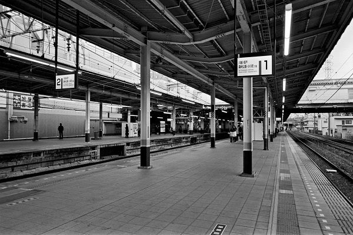
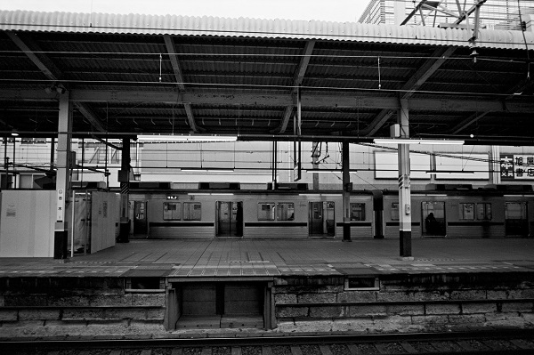
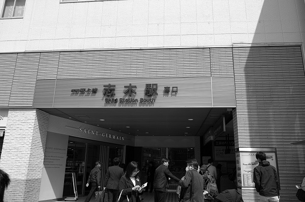
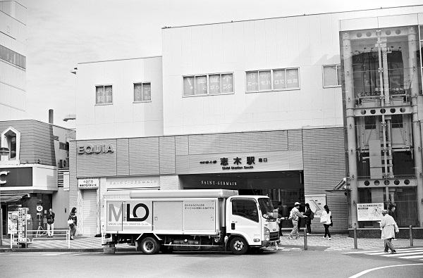

志木駅 Shiki
朝霞台駅←← 東武東上線 →→ 柳瀬川駅

2019/2/24 ﾍｷｻｰRF 25mm ｱｸﾛｽ

2019/2/24 ﾍｷｻｰRF 25mm ｱｸﾛｽ

2018/3 DP1

2017/12 ﾐﾉﾙﾀCLE 35mm Acros

2017/12 ﾐﾉﾙﾀCLE 35mm Acros

2017/12 ﾐﾉﾙﾀCLE 35mm Acros

2016/11 ﾐﾉﾙﾀCLE ｽﾞﾐｸﾛﾝ35mm Acros

2016/11 PentaxSP Tessar2.8/50 Acros

2016/10

2000